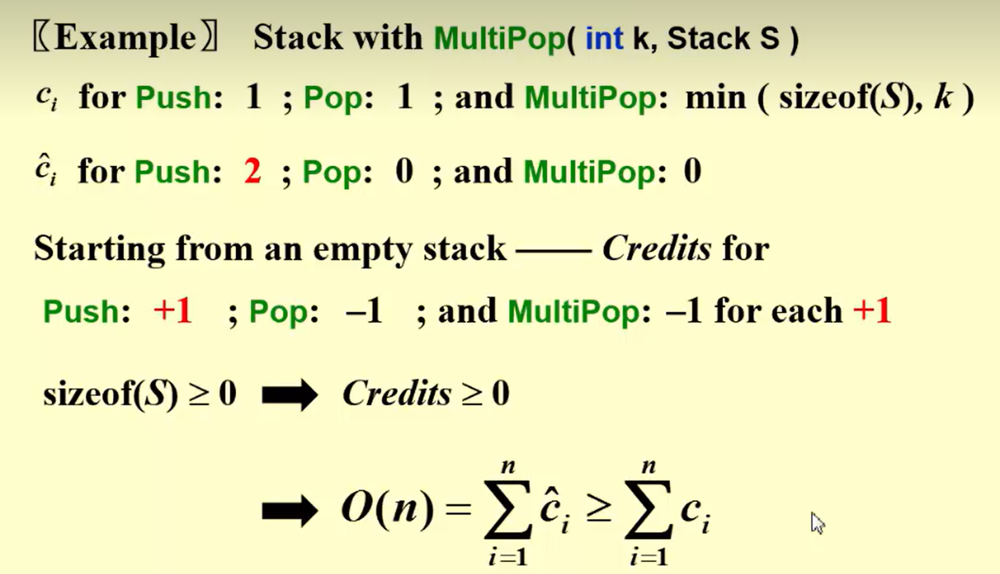
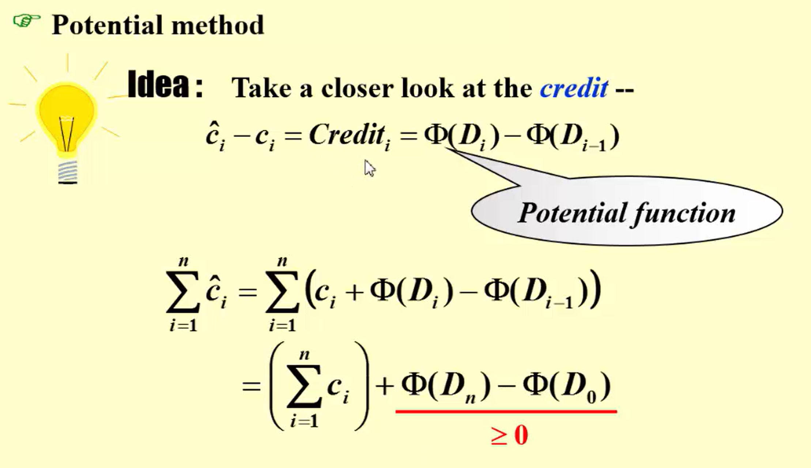

- Aggregate analysis
a sequence of operations takes worst-case time int total. In the worst-case, the average cost, or amortized cost, per operation is .
example: stack with MultiPop(int k, Stack S)
- Accounting method
When an operation’s amortized cost is exceeds its actural cost , we assign the dirrerence to specific objects in the data structure as credit. Credit can pay for the later operations whose amortized cost is less than their actual cost.
实际成本优于均摊成本，把差额分配给数据结构中的特定对象，表示为 credit, credit 可以帮助支付后续操作的费用，这些操作的摊还成本小于实际成本
For all sequences of operations, we must assure:
-
当某次操作的 摊还代价 > 实际代价（(\hat {c}_i > c_i)），
多出来的部分 (\hat {c}_i - c_i) 被存为 credit（信用），附着在数据结构的某些对象上。 -
当后续某次操作 实际代价 > 摊还代价（(c_j> \hat {c}_j)），
就用之前存下的 credit 来 “支付” 超出的部分。
但有一个硬性约束：
任何时候都不能透支 credit！
也就是说，在任何前缀操作 (1…k) 中，累计的 credit 必须 ≥ 0。
这等价于要求：
特别地，对整个序列（(k = n)）就有：

不同操作的摊还代价可能会不同，
- Potential method

2-5 Consider the following buffer management problem. Initially the buffer size (the number of blocks) is one. Each block can accommodate exactly one item. As soon as a new item arrives, check if there is an available block. If yes, put the item into the block, induced a cost of one. Otherwise, the buffer size is doubled, and then the item is able to put into. Moreover, the old items have to be moved into the new buffer so it costs k+1 to make this insertion, where k is the number of old items. Clearly, if there are N items, the worst-case cost for one insertion can be Ω(N). To show that the average cost is O(1), let us turn to the amortized analysis. To simplify the problem, assume that the buffer is full after all the N items are placed. Which of the following potential functions works?
A. The number of items currently in the buffer
B. The opposite number of items currently in the buffer
C. The number of available blocks currently in the buffer
D. The opposite number of available blocks in the buffer
;;;
D. 势能函数需要保证摊还成本都为常数，一个一个试只能选 D

;;;